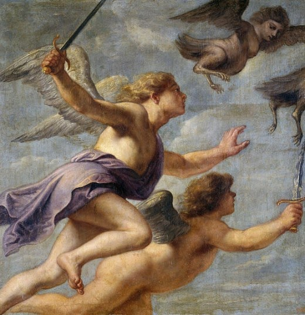

Hôm sau con thuyền Argo ra đi lại gặp bão. Vì thế nhẽ ra đi vào eo biển Bosphore thì con thuyền lại trôi giạt vào đất Thrace. Những người Argonautes lên bờ để nghỉ ngơi và tìm sự giúp đỡ. Họ bước vào một ngôi nhà gần bờ biển. Chủ nhân trong nhà bước ra đón họ là một cụ già mù, chống gậy. Bước đi của cụ run rẩy, gầy yếu đến nỗi chỉ vừa bước được dăm bước là cụ đã khuỵu xuống. Hỏi ra thì biết tên cụ là Phinée vốn là một nhà tiên tri danh tiếng, con của Agénor thần thánh. Có người lại bảo cụ là con của Phénix nhưng có người cãi lại, bảo cụ chính là con của thần Poséidon. Làm vua ở vương quốc Salmydessos thuộc xứ Thessalie, cụ đã trải qua hai đời vợ. Đời vợ trước là nàng Cléopâtre, con gái của thần Gió-Borée và như vậy đối với hai anh em Calaïs và Zétès trong đoàn thủy thủ Argonautes là cụ có quan hệ họ hàng. Đời vợ sau của cụ là nàng Idéa con của Dardanos, và Dardanos, như mọi người đã biết, là một trong những vị vua tổ tiên của người Troie. Được thần Apollon ban cho tài tiên đoán, Phinée đã tiên báo cho những người trần thế đoản mệnh biết được nhiều việc khá cơ mật của thế giới thiên đình, nhất là những nhận định, nghị quyết của thế giới Olympe đối với số phận những người trần thế. Vì lẽ đó các vị thần nổi giận trừng phạt Phinée. Lấy đi ánh sáng trong đôi mắt của cụ. Chưa hết, các vị thần còn hành hạ cụ bằng cách cho những con ác điểu Harpies nửa người là phụ nữ (đúng hơn chỉ có khuôn mặt là phụ nữ nhưng lại có mỏ), nửa người là chim với cánh rộng, chân dài, mỏ nhọn, móng sắc ngày ngày xuống quấy phá bữa ăn của cụ. Cứ đến bữa ăn, dù ăn sớm hay ăn muộn thế nào mặc ý, lũ Harpies này chẳng hiểu vì sao mà biết được, thoắt một cái từ đâu bay đến cướp đi các thức ăn của cụ. Những gì không mang đi được thì chúng giày xéo, phóng uế làm cho cụ chỉ còn cách sờ lần lượm lặt lấy chút ít hột cơm, miếng bánh rơi vãi để cầm hơi. Cần nói thêm, người lũ Harpies luôn bốc lên một uế khí nặng nề không ai chịu nổi. Vì lẽ đó người cụ hốc hác, gầy yếu đến nỗi nói không ra hơi, đi không thành bước. Cụ nói cho những người Argonautes biết, theo một lời truyền phán của thánh thần, chỉ có những Boréades, tức những người con của thần Gió-Borée, mới có thể trừng trị được lũ Harpies này.
Nghe Phinée nói xong, lập tức Jason cho triệu tập Calaïs và Zétès đến. Đến bữa ăn của Phinée, theo thói quen thường lệ, lũ Harpies từ đâu lại bay đến quấy rối phá phách. Vụt một cái, Calaïs và Zétès, hai người con trai của thần Gió-Borée, tung mình bay lên đánh đuổi lũ ác điểu. Ba con Harpies, phải, lũ Harpies có ba chị em là Aello, Ocypète và Céléno, sợ hãi cuống cuồng chạy trốn. Anh em Boréades quyết không tha. Họ truy đuổi chúng đến cùng. Đuổi đến đảo Plots thì vừa tầm gươm để có thể kết liễu đời lũ ác điểu, anh em Boréades liền rút gươm khỏi vỏ vung lên. Họ từ trên cao, cao hơn lũ Harpies, sà xuống... Ngay từ lúc anh em Boréades truy đuổi lũ Harpies, các vị thần đã trông thấy, và thần Zeus phái ngay nữ thần Cầu vồng-Iris xuống can thiệp. Nữ thần Iris bay đến tách anh em Boréades ra khỏi lũ Harpies và dõng dạc truyền đạt lệnh của thần Zeus: ba chị em Harpies từ nay trở đi không được quấy phá cuộc sống của lão vương Phinée nhà tiên đoán tài giỏi. Anh em Boréades hãy trở về với đoàn thủy thủ Argonautes coi như đã hoàn tất công việc.

Anh em Boréades tấn công lũ Harpi
Từ đó trở đi, những hòn đảo Plots mang tên là những hòn đảo Strophades207, tiếng Hy Lạp nghĩa là “Trở về” để ghi nhớ anh em Boréades đuổi lũ Harpies đến đấy là quay trở về Thrace.
Trên đây là nguồn truyền thuyết phổ biến nhất về chuyện cụ già Phinée và lũ ác điểu Harpies, nhưng theo một nguồn khác thì câu chuyện như sau:
Phinée lấy Cléopâtre, con gái của thần Gió-Borée làm vợ, sinh được hai người con. Kể đến khi lấy đời vợ sau thì Phinée phạm tội ngược đãi hai người con của đời vợ trước. Người thì nói Phinée đuổi hai đứa trẻ ra khỏi nhà mặc cho chúng sống cảnh màn trời chiếu đất. Người thì bảo Phinée đã đang tâm chọc mù mắt hai đứa trẻ. Thần Zeus, mặc dù ở chốn cao xa nhưng cũng biết tỏ tường mọi việc, bởi vị thần Hélios ngày nào cũng cưỡi trên cỗ xe ngựa đi suốt từ Đông sang Tây cho nên chẳng có việc gì xảy ra trên mặt đất mà lại không lọt vào con mắt của thần, và thần đã tường trình mọi việc cho đấng phụ vương Zeus biết. Tức giận vì hành động tàn ác của Phinée, Zeus quyết định trừng phạt và cho Phinée chọn một trong hai hình phạt sau đây: chịu chết hay chịu mù. Còn thần Hélios thì tố thêm: vĩnh viễn không cho tên vô đạo ấy nhìn thấy ánh sáng mặt trời, phái lũ Harpies ngày ngày đến quấy phá bữa ăn của Phinée để cho Phinée sống lắt lẻo trong đói khổ và nhục nhã.
Lại có một nguồn khác nữa kể như sau:
Những Boréades, hai anh em Calaïs và Zétès, vì căm giận Phinée đã phụ bạc chị mình là Cléopâtre và ngược đãi hai đứa cháu nên đã chọc mù mắt ông anh rể đi. Nguồn truyền thuyết này đã được F. Engels sử dụng để chứng minh cho những tàn dư của thị tộc mẫu quyền, tức là thị tộc nguyên thủy. Ông viết: “Chỉ qua thần thoại của thời anh hùng mà người Hy Lạp biết được bản chất hết sức chặt chẽ của cái mối liên hệ trong nhiều bộ tộc đã gắn bó người cậu với người cháu trai và phát sinh từ thời đại chế độ mẫu quyền. (...) Cũng theo Diodore (IV, 44) thì người Argonautes đã đổ bộ vào vùng Thrace dưới sự lãnh đạo của Hercules và đã phát hiện ra rằng Phinée, nghe theo lời xúi giục của người vợ mới đã ngược đãi khả ố hai người con trai của người vợ trước mà anh ta đã rẫy bỏ, là những Boréades con của Cléopâtre208. Nhưng trong số những người Argonautes lại có những Boréades khác, anh em của Cléopâtre, tức là anh em của người mẹ những nạn nhân. Tức thì những người này liền bênh vực ngay cháu của họ, giải thoát chúng và giết chết những kẻ canh giữ chúng”.209
Ngày nay, trong văn học thế giới Harpies chuyển thành một danh từ chung với ý nghĩa mới, chỉ những người đàn bà đanh đá, đáo để, ác nghiệt, “thành nanh đỏ mỏ”, ác phụ.
207 Ba hòn đảo ở phía nam Hy Lạp, đối diện với bờ biển phía tây xứ Messénie.
208 Nguyên văn đoạn này dịch: Boréades Cléopâtre; chúng tôi sửa lại cho dễ hiểu và đúng với tích truyện thần thoại.
209 F. Engels. Nguồn gốc của gia đình, của chế độ tư hữu, và của nhà nước. NXB Sự thật, Hà Nội, 1961, tr. 205.